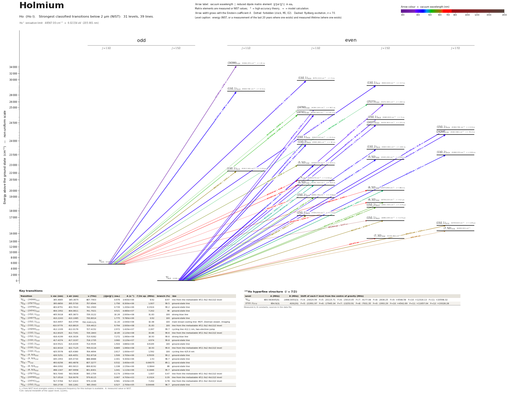

Holmium energy level diagram
Energy levels and transitions of neutral holmium (Ho I): the 39 strongest classified lines below 2 µm from the NIST Atomic Spectra Database and the 31 levels they connect, each line with its vacuum wavelength, frequency and, for 37 of them, the reduced dipole matrix element derived from the NIST transition rate. Measured lifetimes, transition rates, hyperfine constants and isotope shifts from the literature are included, each with its citation.
Hover a line or a level to isolate it, click to keep it selected. Scroll to zoom, drag to move.

Download: diagram (PDF) diagram (SVG) transitions (CSV) levels (CSV) source code

Key transitions of holmium
| Transition | λ vac (nm) | λ air (nm) | ν (THz) | |⟨J‖er‖J′⟩| (ea₀) | A (s⁻¹) | Γ/2π up. (MHz) | branch (%) | Use |
|---|---|---|---|---|---|---|---|---|
| 4I°13/2 – (34366)11/2 | 345.4665 | 345.3675 | 867.7903 | 0.976 | 3.900e+06 | 6.92 | 8.97 | line from the metastable 4f11 6s2 4Io13/2 level |
| 4I°15/2 – (25273)15/2 | 395.6850 | 395.5730 | 757.6544 | 1.756 | 6.300e+06 | 1.007 | 99.5 | ground-state line |
| 4I°15/2 – (24760)13/2 | 403.8751 | 403.7610 | 742.2900 | 0.739 | 1.200e+06 | 0.1924 | 99.2 | ground-state line |
| 4I°15/2 – (24741)13/2 | 404.1952 | 404.0811 | 741.7021 | 4.521 | 4.480e+07 | 7.202 | 99 | ground-state line |
| 4I°15/2 – (15/2,1)15/2 | 405.5018 | 405.3873 | 739.3122 | 10.26 | 2.000e+08 | 31.83 | 100 | strong blue line |
| 4I°15/2 – (24377)15/2 | 410.2243 | 410.1085 | 730.8014 | 1.775 | 5.780e+06 | 0.92 | 100 | ground-state line |
| 4I°15/2 – (15/2,1)17/2 | 410.4957 | 410.3799 | 730.31811(3) | 11.20 | 2.040e+08 | 32.48 | 100 | main broad cooling line: MOT, Zeeman slower, imaging |
| 4I°13/2 – (13/2,1)13/2 | 410.9779 | 410.8619 | 729.4613 | 9.794 | 2.000e+08 | 31.83 | 100 | line from the metastable 4f11 6s2 4Io13/2 level |
| 4I°15/2 – (24264)17/2 | 412.1339 | 412.0176 | 727.4152 | 2.972 | 1.420e+07 | 2.267 | 99.7 | cycling line 412.1 nm, two-electron jump |
| 4I°13/2 – (13/2,1)15/2 | 412.8325 | 412.7161 | 726.1843 | 10.85 | 2.120e+08 | 33.86 | 99.6 | line from the metastable 4f11 6s2 4Io13/2 level |
| 4I°15/2 – (15/2,1)13/2 | 416.4199 | 416.3026 | 719.9282 | 7.272 | 1.060e+08 | 16.93 | 99.6 | strong blue line |
| 4I°15/2 – (13/2,2)13/2 | 417.4374 | 417.3197 | 718.1735 | 3.960 | 3.120e+07 | 4.974 | 99.8 | ground-state line |
| 4I°15/2 – (13/2,2)15/2 | 419.5521 | 419.4339 | 714.5535 | 1.504 | 3.880e+06 | 0.6169 | 100 | ground-state line |
| 4I°13/2 – (13/2,1)11/2 | 422.8316 | 422.7125 | 709.0116 | 6.889 | 1.060e+08 | 16.93 | 99.6 | line from the metastable 4f11 6s2 4Io13/2 level |
| 4I°15/2 – (13/2,2)17/2 | 425.5578 | 425.4380 | 704.4694 | 2.617 | 1.000e+07 | 1.592 | 100 | cycling line 425.6 nm |
| 4I°15/2 – (5,5/2)15/2 | 426.5251 | 426.4051 | 702.8718 | 1.506 | 3.700e+06 | 0.5939 | 99.2 | ground-state line |
| 4I°15/2 – (5,5/2)13/2 | 435.1953 | 435.0730 | 688.8688 | 2.301 | 9.300e+06 | 1.53 | 96.7 | ground-state line |
| 4I°15/2 – 8F13/2 | 493.6256 | 493.4878 | 607.3277 | 0.532 | 3.400e+05 | 0.06075 | 89.1 | ground-state line |
| 4I°15/2 – (6,5/2)13/2 | 494.0392 | 493.9013 | 606.8192 | 1.338 | 2.150e+06 | 0.3844 | 89 | ground-state line |
| 4I°15/2 – (6,5/2)15/2 | 498.1347 | 497.9958 | 601.8301 | 1.041 | 1.110e+06 | 0.1846 | 95.7 | ground-state line |
| 4I°13/2 – (25273)15/2 | 503.7040 | 503.5636 | 595.1759 | 0.174 | 2.990e+04 | 1.007 | 0.47 | line from the metastable 4f11 6s2 4Io13/2 level |
| 4I°13/2 – (24760)13/2 | 517.0516 | 516.9076 | 579.8115 | 0.067 | 4.700e+03 | 0.1924 | 0.39 | line from the metastable 4f11 6s2 4Io13/2 level |
| 4I°13/2 – (24741)13/2 | 517.5764 | 517.4323 | 579.2236 | 0.581 | 3.520e+05 | 7.202 | 0.78 | line from the metastable 4f11 6s2 4Io13/2 level |
| 4I°15/2 – (15/2,2)13/2 | 530.2736 | 530.1261 | 565.3543 | 0.527 | 2.700e+05 | 0.04446 | 96.7 | ground-state line |
λ, ν from NIST level energies unless a measured frequency for this isotope is available. A: measured value or NIST. Γ/2π: natural linewidth of the upper level, 1/(2πτ).
165Ho hyperfine structure (I = 7/2)
| Level | A (MHz) | B (MHz) | Shift of each F level from the centre of gravity (MHz) |
|---|---|---|---|
| 4I°15/2 | 800.583645(6) | -1668.0053(3) | F=4: -24424.99 F=5: -20115.71 F=6: -15019.45 F=7: -9177.08 F=8: -2636.25 F=9: +4548.58 F=10: +12316.13 F=11: +20598.32 |
| (15/2,1)17/2 | 654.9(3) | -620(20) | F=5: -21991.97 F=6: -17945.34 F=7: -13253.91 F=8: -7931.35 F=9: -1993.29 F=10: +4542.69 F=11: +11657.04 F=12: +19328.28 |
Measured A, B constants; sources in the data file.
Listed Ho transitions below 2 µm
| Lower level | Upper level | λ vacuum (nm) | λ air (nm) | ν (THz) | Type | |⟨J‖er‖J′⟩| (ea₀) | A (s⁻¹) | Branching (%) | Source of matrix element / A |
|---|---|---|---|---|---|---|---|---|---|
| 4I°13/2 | (34366)11/2 | 345.4665 | 345.3675 | 867.7903 | E1 | 0.976 measured | 3.900e+06 measured | 8.97 | G. Nave, J. Opt. Soc. Am. B 20, 2193 (2003), Table 2 |
| 4I°15/2 | (25273)15/2 | 395.6850 | 395.5730 | 757.6544 | E1 | 1.756 measured | 6.300e+06 measured | 99.5 | G. Nave, J. Opt. Soc. Am. B 20, 2193 (2003), Table 2 |
| 4I°15/2 | (24760)13/2 | 403.8751 | 403.7610 | 742.2900 | E1 | 0.739 measured | 1.200e+06 measured | 99.2 | G. Nave, J. Opt. Soc. Am. B 20, 2193 (2003), Table 2 |
| 4I°15/2 | (24741)13/2 | 404.1952 | 404.0811 | 741.7021 | E1 | 4.521 measured | 4.480e+07 measured | 99 | G. Nave, J. Opt. Soc. Am. B 20, 2193 (2003), Table 2 |
| 4I°15/2 | (15/2,1)15/2 | 405.5018 | 405.3873 | 739.3122 | E1 | 10.26 measured | 2.000e+08 measured | 100 | G. Nave, J. Opt. Soc. Am. B 20, 2193 (2003), Table 2 |
| 4I°15/2 | (24377)15/2 | 410.2243 | 410.1085 | 730.8014 | E1 | 1.775 measured | 5.780e+06 measured | 100 | G. Nave, J. Opt. Soc. Am. B 20, 2193 (2003), Table 2 |
| 4I°15/2 | (15/2,1)17/2 | 410.4957 | 410.3799 | 730.3181 | E1 | 11.20 measured | 2.040e+08 measured | 100 | G. Nave, J. Opt. Soc. Am. B 20, 2193 (2003), Table 2 |
| 4I°13/2 | (13/2,1)13/2 | 410.9779 | 410.8619 | 729.4613 | E1 | 9.794 measured | 2.000e+08 measured | 100 | G. Nave, J. Opt. Soc. Am. B 20, 2193 (2003), Table 2 |
| 4I°15/2 | (24264)17/2 | 412.1339 | 412.0176 | 727.4152 | E1 | 2.972 measured | 1.420e+07 measured | 99.7 | G. Nave, J. Opt. Soc. Am. B 20, 2193 (2003), Table 2 |
| 4I°13/2 | (13/2,1)15/2 | 412.8325 | 412.7161 | 726.1843 | E1 | 10.85 measured | 2.120e+08 measured | 99.6 | G. Nave, J. Opt. Soc. Am. B 20, 2193 (2003), Table 2 |
| 4I°15/2 | (15/2,1)13/2 | 416.4199 | 416.3026 | 719.9282 | E1 | 7.272 measured | 1.060e+08 measured | 99.6 | G. Nave, J. Opt. Soc. Am. B 20, 2193 (2003), Table 2 |
| 4I°15/2 | (13/2,2)13/2 | 417.4374 | 417.3197 | 718.1735 | E1 | 3.960 measured | 3.120e+07 measured | 99.8 | G. Nave, J. Opt. Soc. Am. B 20, 2193 (2003), Table 2 |
| 4I°15/2 | (13/2,2)15/2 | 419.5521 | 419.4339 | 714.5535 | E1 | 1.504 measured | 3.880e+06 measured | 100 | G. Nave, J. Opt. Soc. Am. B 20, 2193 (2003), Table 2 |
| 4I°13/2 | (13/2,1)11/2 | 422.8316 | 422.7125 | 709.0116 | E1 | 6.889 measured | 1.060e+08 measured | 99.6 | G. Nave, J. Opt. Soc. Am. B 20, 2193 (2003), Table 2 |
| 4I°15/2 | (13/2,2)17/2 | 425.5578 | 425.4380 | 704.4694 | E1 | 2.617 measured | 1.000e+07 measured | 100 | G. Nave, J. Opt. Soc. Am. B 20, 2193 (2003), Table 2 |
| 4I°15/2 | (5,5/2)15/2 | 426.5251 | 426.4051 | 702.8718 | E1 | 1.506 measured | 3.700e+06 measured | 99.2 | G. Nave, J. Opt. Soc. Am. B 20, 2193 (2003), Table 2 |
| 4I°15/2 | (5,5/2)13/2 | 435.1953 | 435.0730 | 688.8688 | E1 | 2.301 measured | 9.300e+06 measured | 96.7 | G. Nave, J. Opt. Soc. Am. B 20, 2193 (2003), Table 2 |
| 4I°15/2 | 8F13/2 | 493.6256 | 493.4878 | 607.3277 | E1 (intercombination) | 0.532 measured | 3.400e+05 measured | 89.1 | G. Nave, J. Opt. Soc. Am. B 20, 2193 (2003), Table 2 |
| 4I°15/2 | (6,5/2)13/2 | 494.0392 | 493.9013 | 606.8192 | E1 | 1.338 measured | 2.150e+06 measured | 89 | G. Nave, J. Opt. Soc. Am. B 20, 2193 (2003), Table 2 |
| 4I°15/2 | (6,5/2)15/2 | 498.1347 | 497.9958 | 601.8301 | E1 | 1.041 measured | 1.110e+06 measured | 95.7 | G. Nave, J. Opt. Soc. Am. B 20, 2193 (2003), Table 2 |
| 4I°13/2 | (25273)15/2 | 503.7040 | 503.5636 | 595.1759 | E1 | 0.174 measured | 2.990e+04 measured | 0.47 | G. Nave, J. Opt. Soc. Am. B 20, 2193 (2003), Table 2 |
| 4I°13/2 | (24760)13/2 | 517.0516 | 516.9076 | 579.8115 | E1 | 0.067 measured | 4.700e+03 measured | 0.39 | G. Nave, J. Opt. Soc. Am. B 20, 2193 (2003), Table 2 |
| 4I°13/2 | (24741)13/2 | 517.5764 | 517.4323 | 579.2236 | E1 | 0.581 measured | 3.520e+05 measured | 0.78 | G. Nave, J. Opt. Soc. Am. B 20, 2193 (2003), Table 2 |
| 4I°15/2 | (15/2,2)13/2 | 530.2736 | 530.1261 | 565.3543 | E1 | 0.527 measured | 2.700e+05 measured | 96.7 | G. Nave, J. Opt. Soc. Am. B 20, 2193 (2003), Table 2 |
| 4I°15/2 | (6,3/2)15/2 | 533.1565 | 533.0082 | 562.2973 | E1 | 0.513 measured | 2.200e+05 measured | 92.4 | G. Nave, J. Opt. Soc. Am. B 20, 2193 (2003), Table 2 |
| 4I°15/2 | (15/2,2)15/2 | 536.1490 | 536.0000 | 559.1588 | E1 | 0.603 measured | 2.990e+05 measured | 99.9 | G. Nave, J. Opt. Soc. Am. B 20, 2193 (2003), Table 2 |
| 4I°13/2 | (5,5/2)13/2 | 569.5251 | 569.3671 | 526.3903 | E1 | 0.576 measured | 2.600e+05 measured | 2.7 | G. Nave, J. Opt. Soc. Am. B 20, 2193 (2003), Table 2 |
| 4I°15/2 | (15/2,1)13/2 | 586.1888 | 586.0264 | 511.4264 | E1 | 0.951 measured | 6.500e+05 measured | 99.5 | G. Nave, J. Opt. Soc. Am. B 20, 2193 (2003), Table 2 |
| 4I°13/2 | (13/2,1)11/2 | 588.4624 | 588.2993 | 509.4505 | E1 | 1.025 measured | 8.700e+05 measured | 100 | G. Nave, J. Opt. Soc. Am. B 20, 2193 (2003), Table 2 |
| 4I°15/2 | (15/2,1)15/2 | 592.3371 | 592.1730 | 506.1180 | E1 | 0.769 measured | 3.600e+05 measured | 97.9 | G. Nave, J. Opt. Soc. Am. B 20, 2193 (2003), Table 2 |
| 4I°15/2 | (15/2,1)17/2 | 598.4505 | 598.2848 | 500.9478 | E1 | 1.324 measured | 9.200e+05 measured | 100 | G. Nave, J. Opt. Soc. Am. B 20, 2193 (2003), Table 2 |
| 4I°15/2 | (7,5/2)17/2 | 608.3461 | 608.1778 | 492.7991 | E1 | – | – | – | – |
| 4I°15/2 | (7,3/2)15/2 | 660.6739 | 660.4915 | 453.7677 | E1 | – | – | – | – |
| 4I°13/2 | 8F13/2 | 673.9194 | 673.7334 | 444.8491 | E1 (intercombination) | 0.298 measured | 4.200e+04 measured | 11 | G. Nave, J. Opt. Soc. Am. B 20, 2193 (2003), Table 2 |
| 4I°13/2 | (6,5/2)13/2 | 674.6905 | 674.5043 | 444.3407 | E1 | 0.740 measured | 2.580e+05 measured | 10.7 | G. Nave, J. Opt. Soc. Am. B 20, 2193 (2003), Table 2 |
| 4I°13/2 | (6,5/2)15/2 | 682.3521 | 682.1639 | 439.3515 | E1 | 0.368 measured | 5.400e+04 measured | 4.65 | G. Nave, J. Opt. Soc. Am. B 20, 2193 (2003), Table 2 |
| 4I°13/2 | (15/2,2)13/2 | 744.1312 | 743.9263 | 402.8758 | E1 | 0.161 measured | 9.100e+03 measured | 3.26 | G. Nave, J. Opt. Soc. Am. B 20, 2193 (2003), Table 2 |
| 4I°13/2 | (6,3/2)15/2 | 749.8208 | 749.6144 | 399.8188 | E1 | 0.253 measured | 1.920e+04 measured | 8.06 | G. Nave, J. Opt. Soc. Am. B 20, 2193 (2003), Table 2 |
| 4I°13/2 | (15/2,1)15/2 | 872.4039 | 872.1644 | 343.6395 | E1 | 0.177 measured | 6.000e+03 measured | 1.63 | G. Nave, J. Opt. Soc. Am. B 20, 2193 (2003), Table 2 |
Reduced dipole matrix elements follow the convention A = ω³|d|²/(3πε₀ħc³(2J′+1)), with J′ the upper level. Tags show where a number comes from: measured, NIST compilation, high-accuracy theory, or a model calculation.
Ho energy levels
Ho⁺ ionisation limit 48567.00 cm⁻¹ = 6.02154 eV (205.901 nm)
Sources
- Dankwort, Ferch, Gebauer, Z. Phys. 267, 229 (1974) (abstract)
- Den Hartog, Wiese, Lawler, J. Opt. Soc. Am. B 16, 2278 (1999), Table 2
- G. Nave, J. Opt. Soc. Am. B 20, 2193 (2003), Table 2
- Hostetter, Pritchard, Lawler, Saffman, Phys. Rev. A 91, 012507 (2015)
- Miao, Hostetter, Stratis, Saffman, Phys. Rev. A 89, 041401(R) (2014)
- NIST ASD level energies
165Ho has I=7/2; hyperfine convention E = A K/2 + B [3K(K+1)/4 - I(I+1)J(J+1)] / [2I(2I-1)J(2J-1)], K = F(F+1)-I(I+1)-J(J+1) (ground state F=4..11, cooling on F=11 -> F'=12). The Den Hartog et al. 1999 lifetime table and the Nave 2003 transition-rate table were read from the publisher abstract pages, whose HTML embeds the tables, through an automated page reader (direct download is captcha-blocked), not from the PDFs; the even-parity lifetime table was read twice with identical results, every row was matched to a NIST level by energy and J, and the Nave A values reproduce 1/tau for the single-branch levels (e.g. 204e6 s^-1 <-> 4.9 ns, 0.92e6 <-> 1090 ns). Lifetime uncertainties are the blanket +-5% (+-10%/+-15% where footnoted). Nave wavelengths quoted in notes are air wavelengths. Extra fields beyond SCHEMA.md: top-level ionization_limit; level fields lifetime_other, level_energy_measured, C_kHz/D_kHz inside the ground-state hyperfine entry; transition fields linewidth_MHz / linewidth_kHz, wavenumber_cm, leak_to_metastable, alternatives. rme_J_ea0 values are derived from the Nave A coefficient of the same entry (schema convention, J' = upper level). g_J without a literature source is copied from the NIST levels file (few exist for Ho I).
Atoms with measured data
- Lithium-632 levels, 85 lines
- Lithium-732 levels, 85 lines
- Beryllium-917 levels, 26 lines
- Sodium-2336 levels, 106 lines
- Magnesium-2418 levels, 61 lines
- Magnesium-2518 levels, 61 lines
- Potassium-3934 levels, 84 lines
- Potassium-4034 levels, 84 lines
- Potassium-4134 levels, 84 lines
- Calcium-4035 levels, 61 lines
- Calcium-4335 levels, 61 lines
- Rubidium-8536 levels, 94 lines
- Rubidium-8736 levels, 94 lines
- Strontium-8740 levels, 70 lines
- Strontium-8840 levels, 70 lines
- Caesium-13331 levels, 79 lines
- Barium-13744 levels, 89 lines
- Barium-13844 levels, 89 lines
- Dysprosium-16339 levels, 55 lines
- Dysprosium-16439 levels, 55 lines
- Ytterbium-17118 levels, 26 lines
- Ytterbium-17418 levels, 26 lines